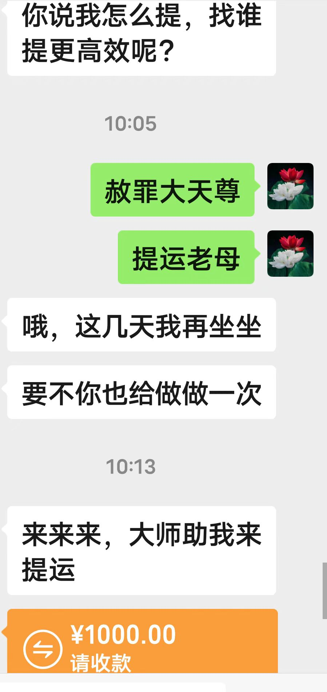
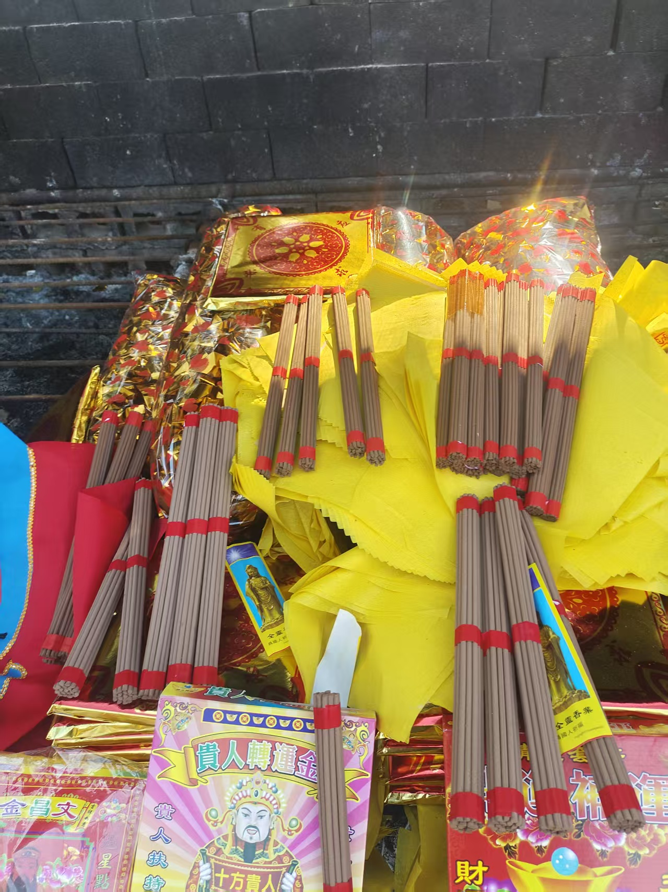
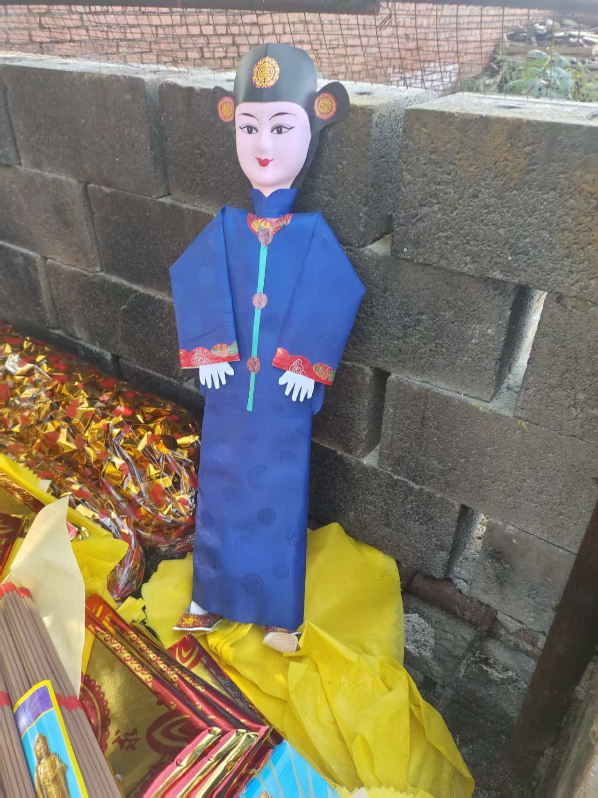
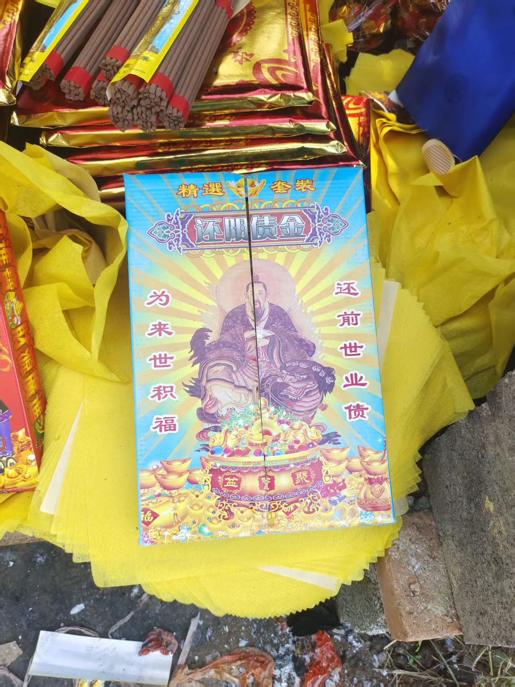
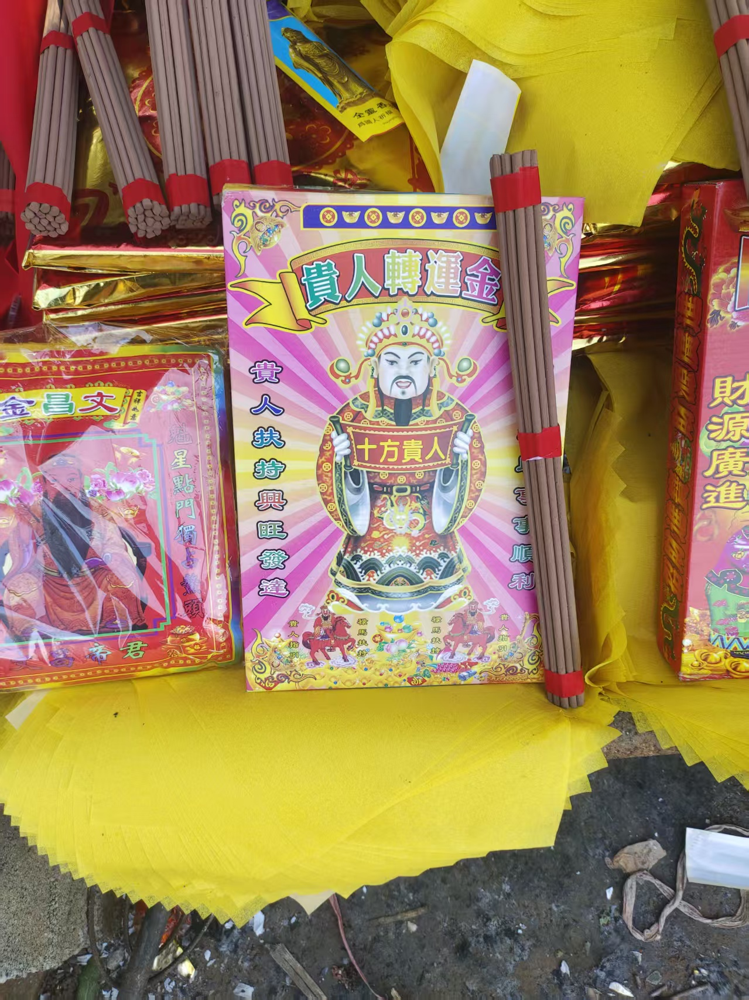
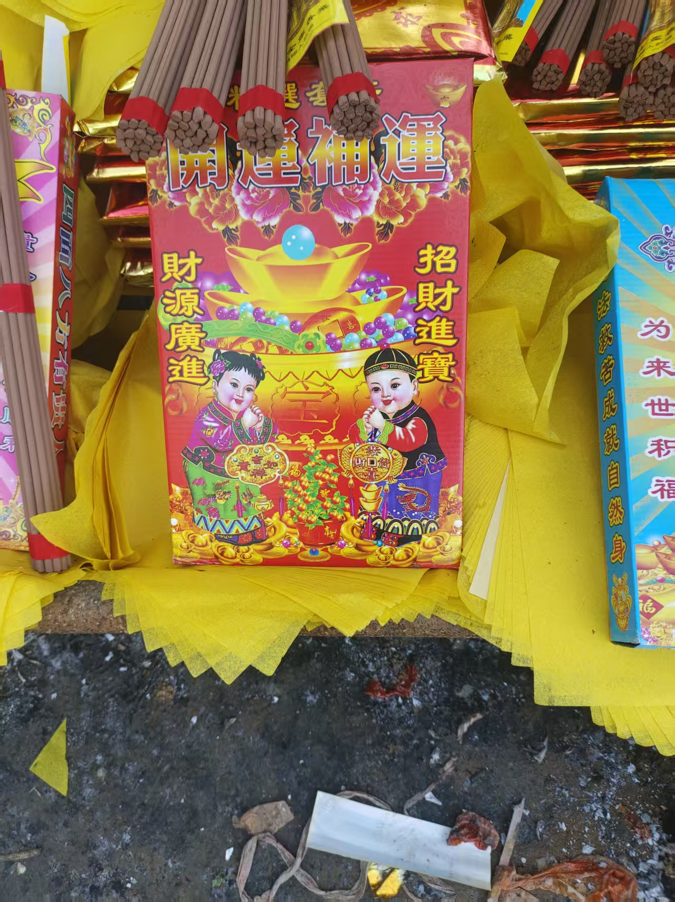
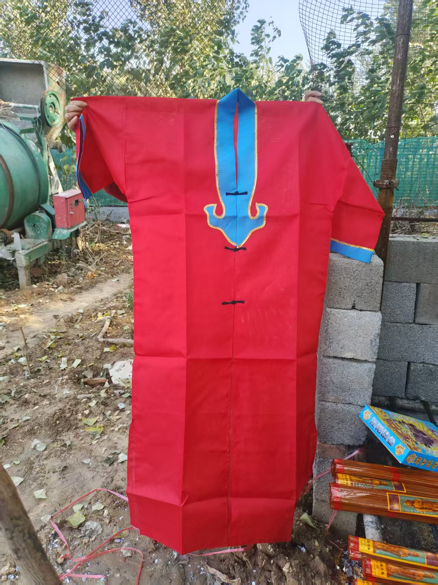
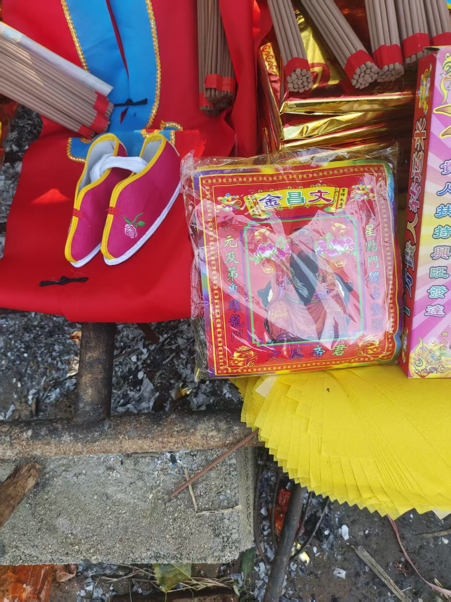
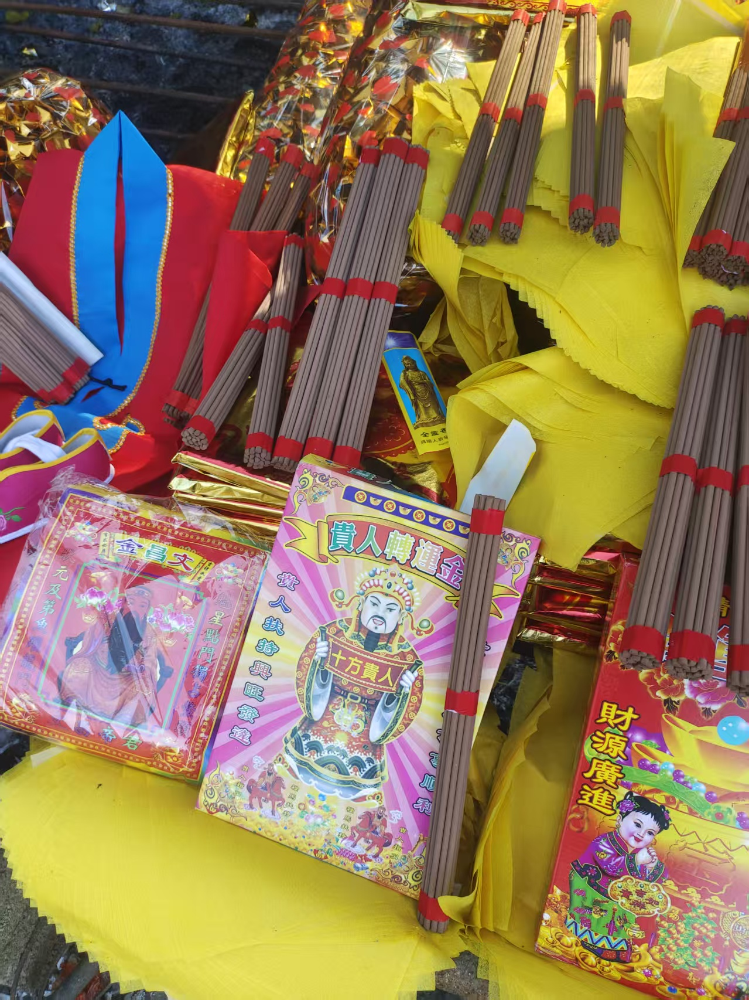
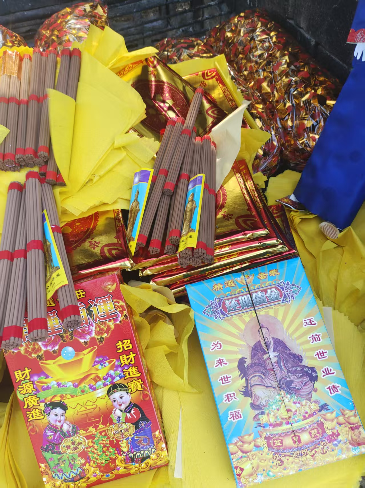

20251031提运法事
符咒术法 原始对话记录
提运法事怎么做，
求谁才能提运
就是提运老母
运气不好，肯定做了不善的事，所以还要求赦罪大天尊，送上元宝，给自己消业
摆一桌宴席，请众神来祝贺
可以给自己做
做的多了就会了
心诚则灵
如佛亲临
一定要做到神佛就在身边
这样法事效果好
我按排批发商烧
开单子的时候，提运老母显像，要一身黄色神袍，要绣花鞋
这就是说，要出面保人了
绝对效验
这个就要远程开光
凤冠，因为没有货那就要开光开上
这就是补救，的方法
就像装一样脑虚空打造一个凤冠









提运法事：请提运老母与上元宝的做法记录
一、本页记录了什么
本页是一段关于"提运法事"的零散记录：文字不长，围绕"提运怎么做、求谁提运、用什么用品"展开，另配了十余张图片和一段视频。原页以图片/视频为主，文字只是要点式的旁注。这里把散落的字句串成一条线索，便于检索与理解。
二、法事的基本环节
按记录，这类法事大致包含几步：
| 环节 | 记录里的说法 |
|---|---|
| 求谁 | "提运老母"；运气不好则另求"赦罪大天尊" |
| 上元宝 | "送上元宝，给自己消业" |
| 摆席 | "摆一桌宴席，请众神来祝贺" |
| 亲力亲为 | "可以给自己做""做的多了就会了" |
| 心态 | "心诚则灵""如佛亲临" |
记录里反复强调"一定要做到神佛就在身边"，认为这样法事才顺。
三、涉及的神位与用品
- 提运老母：本页核心的祈请对象，记录中写到"开单子的时候，提运老母显像"。
- 赦罪大天尊：用于"消业"的祈请对象。
- 元宝：作为上供、消业用品被多次提到。
- 宴席：请众神"祝贺"的形式。
这些名称与做法，属民间法事体系里的神位与科仪用语，与佛道两教的世俗供奉习惯有交叉。
四、远程开光与"补凤冠"
记录里有一段关于远程开光的说明：当供品"没有货"时，用"开光"来补上，并称之为"补救的方法"。文中还提到神像要"一身黄色神袍、绣花鞋"，要"凤冠"，认为这表示"要出面保人了"。这些属传承中的象征性说法，本页只作如实转述。
五、常见问题
问：这个法事具体怎么收费？ 本页没有写具体金额与流程，只记录了思路与用品。涉及收费的部分以当事人自己的约定为准，本站不作任何引导。
问：做了就一定有变化吗？ 本页原文有"绝对效验"等表达，但那是记录者的当场说法。按本站定位，这类内容属民间民俗记录，不构成任何现实功效承诺。
问：普通人能自己照着做吗？ 记录里说"可以给自己做"。本站仅作文化介绍，不建议据此处理现实中的情绪或健康问题；如有困扰，请寻求正规渠道帮助。
六、提醒
- 本页是民间法事记录，原页图片为主，文字只是要点旁注；
- 神位、元宝、宴席等属民俗与科仪术语，不代表现实功效；
- 不承诺效果、不诱导付费，请理性看待，尊重科学与法律。